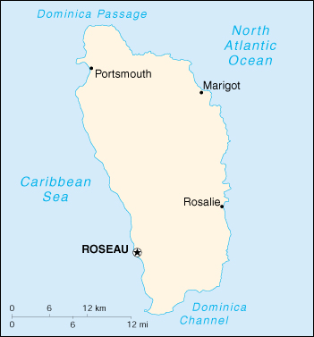

|
Dominica | |
| Introduction Geography People Government Economy Communications Transportation Military Transnational Issues | ||
|  | ||
| Dominica | Introduction | Top of Page |
| Background: | Dominica was the last of the Caribbean islands to be colonized by Europeans, due chiefly to the fierce resistance of the native Caribs. France ceded possession to Great Britain in 1763, which made the island a colony in 1805. In 1980, two years after independence, Dominica's fortunes improved when a corrupt and tyrannical administration was replaced by that of Mary Eugenia CHARLES, the first female prime minister in the Caribbean, who remained in office for 15 years. |
| Dominica | Geography | Top of Page |
| Location: | Caribbean, island between the Caribbean Sea and the North Atlantic Ocean, about one-half of the way from Puerto Rico to Trinidad and Tobago |
| Geographic coordinates: | 15 25 N, 61 20 W |
| Map references: | Central America and the Caribbean |
| Area: |
total:
754 sq km
land: 754 sq km water: 0 sq km |
| Area - comparative: | slightly more than four times the size of Washington, DC |
| Land boundaries: | 0 km |
| Coastline: | 148 km |
| Maritime claims: |
contiguous zone:
24 NM
exclusive economic zone: 200 NM territorial sea: 12 NM |
| Climate: | tropical; moderated by northeast trade winds; heavy rainfall |
| Terrain: | rugged mountains of volcanic origin |
| Elevation extremes: |
lowest point:
Caribbean Sea 0 m
highest point: Morne Diablatins 1,447 m |
| Natural resources: | timber, hydropower, arable land |
| Land use: |
arable land:
9%
permanent crops: 13% permanent pastures: 3% forests and woodland: 67% other: 8% (1993 est.) |
| Irrigated land: | NA sq km |
| Natural hazards: | flash floods are a constant threat; destructive hurricanes can be expected during the late summer months |
| Environment - current issues: | NA |
| Environment - international agreements: |
party to:
Biodiversity, Climate Change, Desertification, Endangered Species, Environmental Modification, Hazardous Wastes, Law of the Sea, Ozone Layer Protection, Ship Pollution, Whaling
signed, but not ratified: none of the selected agreements |
| Dominica | People | Top of Page |
| Population: | 70,786 (July 2001 est.) |
| Age structure: |
0-14 years:
28.72% (male 10,300; female 10,027)
15-64 years: 63.45% (male 23,056; female 21,855) 65 years and over: 7.83% (male 2,267; female 3,281) (2001 est.) |
| Population growth rate: | -0.98% (2001 est.) |
| Birth rate: | 17.81 births/1,000 population (2001 est.) |
| Death rate: | 7.19 deaths/1,000 population (2001 est.) |
| Net migration rate: | -20.37 migrant(s)/1,000 population (2001 est.) |
| Sex ratio: |
at birth:
1.05 male(s)/female
under 15 years: 1.03 male(s)/female 15-64 years: 1.05 male(s)/female 65 years and over: 0.69 male(s)/female total population: 1.01 male(s)/female (2001 est.) |
| Infant mortality rate: | 16.54 deaths/1,000 live births (2001 est.) |
| Life expectancy at birth: |
total population:
73.6 years
male: 70.74 years female: 76.61 years (2001 est.) |
| Total fertility rate: | 2.03 children born/woman (2001 est.) |
| HIV/AIDS - adult prevalence rate: | NA% |
| HIV/AIDS - people living with HIV/AIDS: | NA |
| HIV/AIDS - deaths: | NA |
| Nationality: |
noun:
Dominican(s)
adjective: Dominican |
| Ethnic groups: | black, Carib Amerindian |
| Religions: | Roman Catholic 77%, Protestant 15% (Methodist 5%, Pentecostal 3%, Seventh-Day Adventist 3%, Baptist 2%, other 2%), none 2%, other 6% |
| Languages: | English (official), French patois |
| Literacy: |
definition:
age 15 and over has ever attended school
total population: 94% male: 94% female: 94% (1970 est.) |
| Dominica | Government | Top of Page |
| Country name: |
conventional long form:
Commonwealth of Dominica
conventional short form: Dominica |
| Government type: | parliamentary democracy; republic within the Commonwealth |
| Capital: | Roseau |
| Administrative divisions: | 10 parishes; Saint Andrew, Saint David, Saint George, Saint John, Saint Joseph, Saint Luke, Saint Mark, Saint Patrick, Saint Paul, Saint Peter |
| Independence: | 3 November 1978 (from UK) |
| National holiday: | Independence Day, 3 November (1978) |
| Constitution: | 3 November 1978 |
| Legal system: | based on English common law |
| Suffrage: | 18 years of age; universal |
| Executive branch: |
chief of state:
President Vernon Lordon SHAW (since 6 October 1998)
head of government: Prime Minister Pierre CHARLES (since 1 October 2000); note - assumed post after death of Roosevelt DOUGLAS cabinet: Cabinet appointed by the president on the advice of the prime minister elections: president elected by the House of Assembly for a five-year term; election last held 6 October 1998 (next to be held NA October 2003); prime minister appointed by the president election results: Vernon Lordon SHAW elected president; percent of legislative vote - NA% |
| Legislative branch: |
unicameral House of Assembly (30 seats, 9 appointed senators, 21 elected by popular vote; members serve five-year terms)
elections: last held 31 January 2000 (next to be held by NA 2005) election results: percent of vote by party - NA%; seats by party -DLP 11, UWP 8, DFP 2 |
| Judicial branch: | Eastern Caribbean Supreme Court, consisting of the Court of Appeal and the High Court (located in Saint Lucia; one of the six judges must reside in Dominica and preside over the Court of Summary Jurisdiction) |
| Political parties and leaders: | Dominica Freedom Party or DFP [Charles SAVARIN]; Dominica Labor Party or DLP [Pierre CHARLES]; United Workers Party or UWP [Edison JAMES] |
| Political pressure groups and leaders: | Dominica Liberation Movement or DLM (a small leftist party) |
| International organization participation: | ACCT, ACP, C, Caricom, CDB, ECLAC, FAO, G-77, IBRD, ICFTU, ICRM, IDA, IFAD, IFC, IFRCS, ILO, IMF, IMO, Interpol, IOC, ITU, NAM (observer), OAS, OECS, OPANAL, OPCW, UN, UNCTAD, UNESCO, UNIDO, UPU, WCL, WHO, WIPO, WMO, WTrO |
| Diplomatic representation in the US: |
chief of mission:
Ambassador Nicholas J. O. LIVERPOOL (resident in Dominica)
chancery: 3216 New Mexico Avenue NW, Washington, DC 20016 telephone: [1] (202) 364-6781 FAX: [1] (202) 364-6791 consulate(s) general: New York |
| Diplomatic representation from the US: | the US does not have an embassy in Dominica; US interests are served by the embassy in Bridgetown, Barbados |
| Flag description: | green, with a centered cross of three equal bands - the vertical part is yellow (hoist side), black, and white and the horizontal part is yellow (top), black, and white; superimposed in the center of the cross is a red disk bearing a sisserou parrot encircled by 10 green, five-pointed stars edged in yellow; the 10 stars represent the 10 administrative divisions (parishes) |
| Dominica | Economy | Top of Page |
| Economy - overview: | The economy depends on agriculture and is highly vulnerable to climatic conditions, notably tropical storms. Agriculture, primarily bananas, accounts for 21% of GDP and employs 40% of the labor force. Development of the tourist industry remains difficult because of the rugged coastline, lack of beaches, and the lack of an international airport. Hurricane Luis devastated the country's banana crop in September 1995; tropical storms had wiped out one-quarter of the crop in 1994 as well. The subsequent recovery has been fueled by increases in construction, soap production, and tourist arrivals. The government is attempting to develop an offshore financial industry in order to diversify the island's production base. |
| GDP: | purchasing power parity - $290 million (2000 est.) |
| GDP - real growth rate: | 0.5% (2000 est.) |
| GDP - per capita: | purchasing power parity - $4,000 (2000 est.) |
| GDP - composition by sector: |
agriculture:
21%
industry: 16% services: 63% (1999 est.) |
| Population below poverty line: | NA% |
| Household income or consumption by percentage share: |
lowest 10%:
NA%
highest 10%: NA% |
| Inflation rate (consumer prices): | 2.5% (2000 est.) |
| Labor force: | 25,000 |
| Labor force - by occupation: | agriculture 40%, industry and commerce 32%, services 28% |
| Unemployment rate: | 20% (1999 est.) |
| Budget: |
revenues:
$72 million
expenditures: $79.9 million, including capital expenditures of $11.5 million (FY97/98) |
| Industries: | soap, coconut oil, tourism, copra, furniture, cement blocks, shoes |
| Industrial production growth rate: | -10% (1997 est.) |
| Electricity - production: | 62 million kWh (1999) |
| Electricity - production by source: |
fossil fuel:
48.39%
hydro: 51.61% nuclear: 0% other: 0% (1999) |
| Electricity - consumption: | 57.7 million kWh (1999) |
| Electricity - exports: | 0 kWh (1999) |
| Electricity - imports: | 0 kWh (1999) |
| Agriculture - products: | bananas, citrus, mangoes, root crops, coconuts, cocoa; forest and fishery potential not exploited |
| Exports: | $60.7 million (2000 est.) |
| Exports - commodities: | bananas, soap, bay oil, vegetables, grapefruit, oranges |
| Exports - partners: | Caricom countries 47%, UK 36%, US 7% (1996 est.) |
| Imports: | $126 million (2000 est.) |
| Imports - commodities: | manufactured goods, machinery and equipment, food, chemicals |
| Imports - partners: | US 41%, Caricom countries 25%, UK 13%, Netherlands, Canada (1996 est.) |
| Debt - external: | $108.9 million (1999) |
| Economic aid - recipient: | $24.4 million (1995) |
| Currency: | East Caribbean dollar (XCD) |
| Currency code: | XCD |
| Exchange rates: | East Caribbean dollars per US dollar - 2.7000 (fixed rate since 1976) |
| Fiscal year: | 1 July - 30 June |
| Dominica | Communications | Top of Page |
| Telephones - main lines in use: | 19,000 (1996) |
| Telephones - mobile cellular: | 461 (1996) |
| Telephone system: |
general assessment:
NA
domestic: fully automatic network international: microwave radio relay and SHF radiotelephone links to Martinique and Guadeloupe; VHF and UHF radiotelephone links to Saint Lucia |
| Radio broadcast stations: | AM 3, FM 10, shortwave 0 (1998) |
| Radios: | 46,000 (1997) |
| Television broadcast stations: | 0 (however, there is one cable television company) (1997) |
| Televisions: | 6,000 (1997) |
| Internet country code: | .dm |
| Internet Service Providers (ISPs): | 16 (2000) |
| Internet users: | 2,000 (2000) |
| Dominica | Transportation | Top of Page |
| Railways: | 0 km |
| Highways: |
total:
750 km
paved: 375 km unpaved: 375 km (2001) |
| Waterways: | none |
| Ports and harbors: | Portsmouth, Roseau |
| Merchant marine: | none (2000 est.) |
| Airports: | 2 (2000 est.) |
| Airports - with paved runways: |
total:
2
914 to 1,523 m: 2 (2000 est.) |
| Dominica | Military | Top of Page |
| Military branches: | Commonwealth of Dominica Police Force (includes Special Service Unit, Coast Guard) |
| Military expenditures - dollar figure: | $NA |
| Military expenditures - percent of GDP: | NA% |
| Dominica | Transnational Issues | Top of Page |
| Disputes - international: | none |
| Illicit drugs: | transshipment point for narcotics bound for the US and Europe; minor cannabis producer; banking industry is vulnerable to money laundering |
{kind=link}
{kind=link}